Filtros y Efectos
Filtros y Efectos son casi cualquier acción que se puede tomar en toda
o parte de una pista, y que cambian el sonido de la misma. Estas
acciones pueden ser tan simples como aumentar el volumen del sonido y
tan complejas como aplicar Point Cast Distortion. Hay más de 125
efectos que se incluyen en Audacity, y aún más se pueden descargar del
Internet.
El uso de todos estos efectos, con pocas excepciones, ocurre en una
selección de audio. Puedes usar la herramienta de selección para
seleccionar audio haciendo clic y arrastrando el cursor a traveés del
area en la gráfica de audio que quieres seleccionar. Para seleccionar
pistas de audio enteras, puedes presionar Ctrl+A.
Para ver los ejemplos de esta sección, comencemos descargando la pista de la voz de hombre de la
sección anterior.
Amplificación
La acción más básica que encontrarás al trabajar con una pista de audio
va a ser la de aumentar o reducir (amplificar) el volumen de una
porción del audio. Tal vez recuerdes de la sección pasada, que es
posible aumentar o reduric el volumen de una pista entera usando el
deslizador a la izquierda de la pista; sin embargo, esto no se puede
aplicar a porciones específicas de la pista.
Hagamos una selección y leugo vayamos a Efectos -> Amplificar.
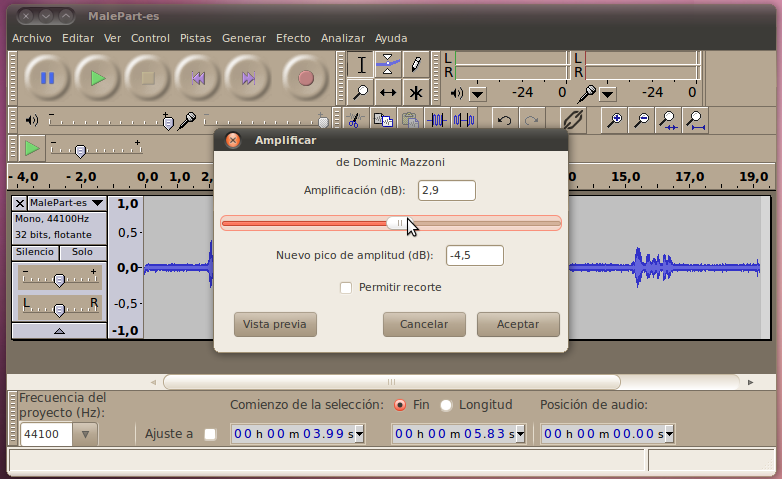
Aquí tendrás que escoger una cantidad de amplificación en dBs. Cero dBs
no hará ningún cambio a la selección, mientras cualquier número mayor
que cero aumentará el volumen y un número menor que cero reducirá el
volumen. Es posible escoger un nivel tan lejos de cero que la selección
de audio sobrepasa la intensidad máxima que el sistema puede
reproducir. Al esto lo llamamos recorte (clipping). Puedes marcar la
opción de permitir recorte si eso es lo que quieres, pero va a sonar
mal. El "Nuevo pico de amplitud" es la cantidad máxima de amplificación
que puedes aplicar sin causar recorte.
Así es como se ve la gráfica con una amplificación bastante grande.
Normalmente esto sería algo excesivo, pero aquí lo exageramos para
hacer énfasis en la diferencia visual.
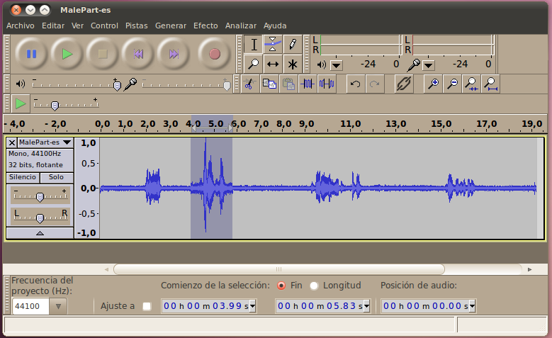
Eso es todo lo que hay que saber sobre la amplificación!
Reducción de Ruido
Tal vez haz notado que a través este audio se escucha bastante ruido de
trasfondo. Esto es incómodo y hace que el audio sea más dificil de
escuchar, así que queremos removerlo. Para las partes de la pista que
son sólo ruido sin nadie hablando, podríamos simplemente usar la
herramienta de envolvente o la función de silenciar sonido, pero
desafortunadamente el ruido continúa aún mientras la persona está
hablando. Para remover este ruido de todo el audio, incluyendo las
partes importantes, usaremos el filtro de reducción de ruido.
Comencemos seleccionado un área del audio que SOLAMENTE tenga el ruido
de trasfondo. Es importante que no haya ningún otro tipo de sonido en
esta área, ya que el filtro va a crear un perfil de ruido basado en
esta porción de audio y lo va a aplicar al resto de la pista. Una vez
tengamos nuestra selección, vayamos a Efectos -> Reducción de ruido.
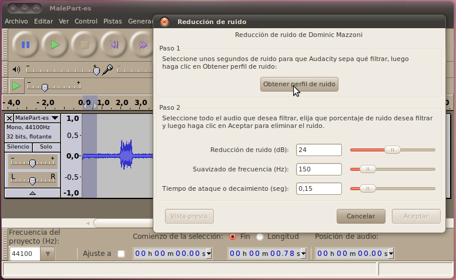
Haz clic en "Obtener perfil de ruido" para usar el área seleccionada
como perfil.
Ahora volvamos a la gráfica de audio y seleccionemos el área en la cual
querremos remover el ruido (probablemente seleccionaremos la pista
completa) y volvamos al efecto de Reducción de ruido. Ahora estamos en
el Paso 2, aplicando el filtro. Podemos dejar los parámeteros como
están a 24dB, 150Hz, y 0.15s, y hacer clic en Aceptar.
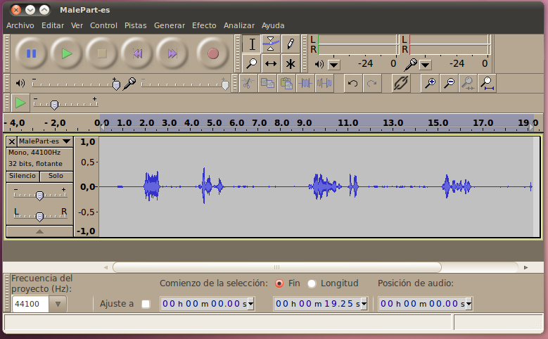
Reproduce el audio para escuchar la diferencia (puedes presionar Ctrl+z
dar un paso atrás y escuchar el audio original también, luego Ctrl+y
para regresar adelente). Si aumentas el volumen, aún podrás escuchar un
poco de ruido en las partes calladas, pero en general se escucha mucho
mejor, y el ruido no es notable durante la conversación. si quieres
mejorar las partes calladas aún más, puedes usar las herramientas de
silenciar o de envolvente.
Fade In/Out
Para las próximas dos secciones vamos a necesitar una pista corta de
audio. Para obtenerla, abre el trailer de sintel, y crea
una selección que comienze a los 17 segundos y dure 15 segundos.
(Sugerencia: escribe la duración en la barra de selección debajo de las
gráficas de audio).
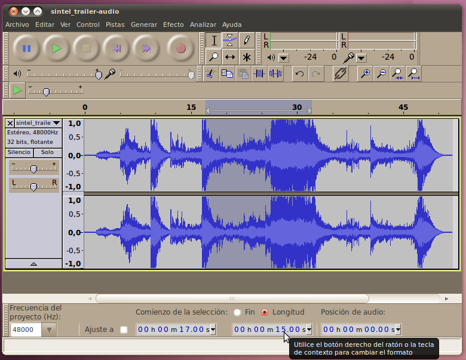
Una vez tengamos nuestra selección, recortaremos todo lo demás, de
manera que solo nuestra selección permanezca. En vez de usar el botón
común de corte, podemos usar el botón de recortar para remove todo el
audio que esté fuera de la selección.
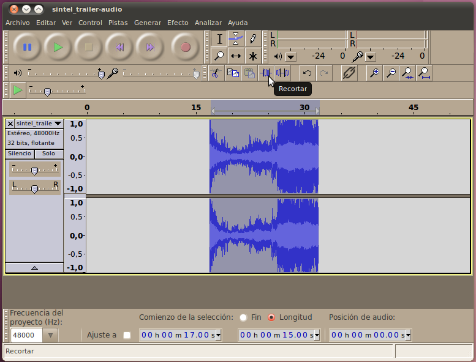
Finalmente, usa la herramienta de cambio de tiempo para mover la pista
al principio del proyecto.

(Ahora sería un buen momento para guardar tu trabajo en el disco.)
Ahora que estamos listos, podemos empezar a editar esta pista para
hacerla sonar bien. Una de las primeras cosas que notaremos es que el
sonido comienza y se detiene muy repentinamente. Para lograr una
transición más gradual, usaremos los efectos de Aparecer
progresivamente (Fade In) y Desvanecer progresivamente (Fade Out).
Para comenzar a usar el efecto de Aparecer (Fade In), seleccionemos el
área a la que queremos aplicar el efecto. No hace falta mucho tiempo
para lograr un buen efecto de aparecer, así que seleccionemos más o
menos la primera mitad de segundo de la pista.
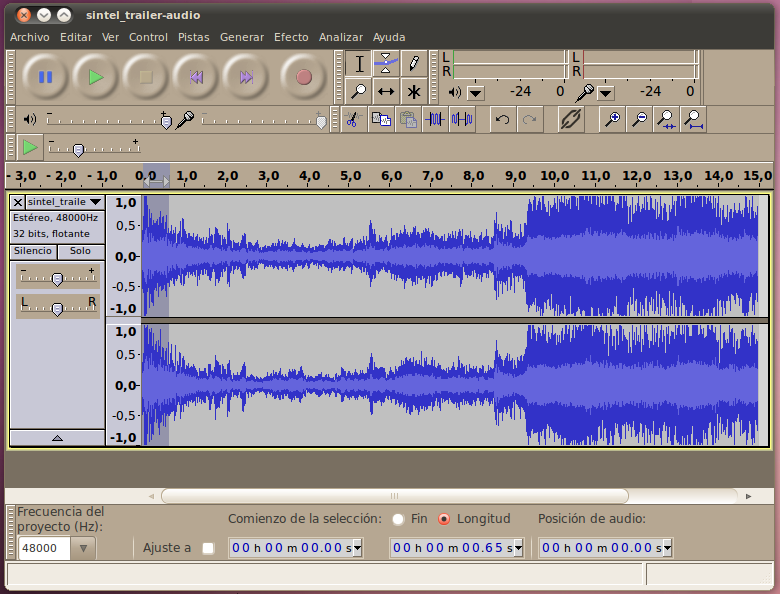
Ahora que lo seleccionamos, pudemos ir a Efecto -> Aparecer
progresivamente.
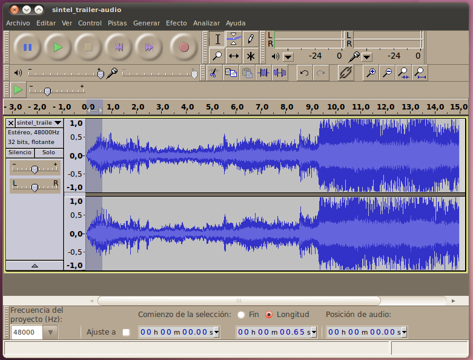
Puedes escucahar el comienzo de la pista y oir una gran diferencia
entre los dos comienzos. Nuestro nuevo audio con el efecto Aparecer
progresivamente es mucho más gradual.
Para el desvanecer, escogeremos un área un poco mayor para que el
efecto sea aún más gradual (ya que hay mucho sonido inmediatamente
antes), así que seleccionemos el último segundo de sonido.
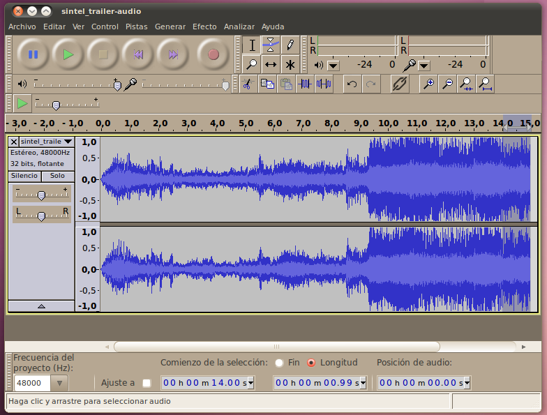
Ejecuta Efectos -> Desvancer progresivamente.
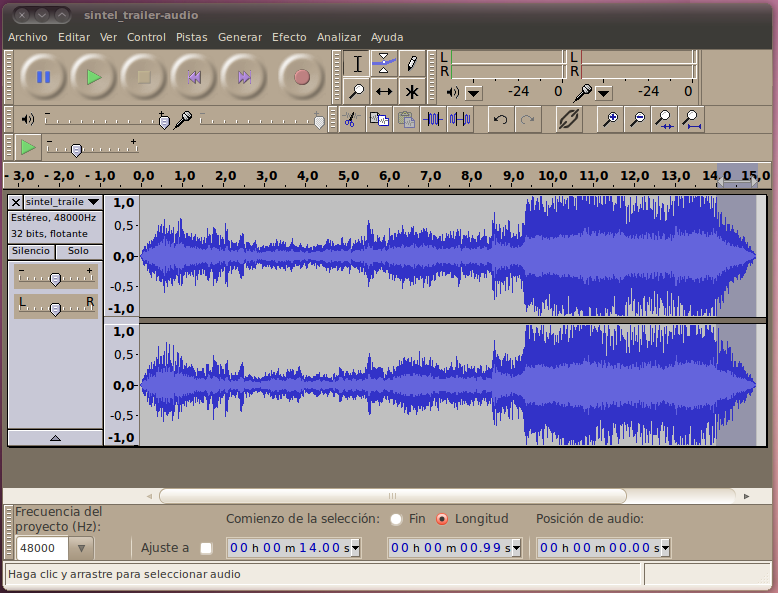
Puedes escuchar el final de la pista y oir que el sonido desvanece y
evita una caída repentina de audio.
Compresor
A veces, una pista de audio (como la que estamos usando en este
ejemplo) puede tener secciones que son much más calladas que otras. En
este caso específico, esto es probablemente algo bueno, porque el video
está tratando de evocar ánimo en las partes altas. Sin embargo, muchas
veces esto no es una cualidad deseada del audio. Por ejemplo, si tienes
una grabación de una persona hablando, y durante la grabación la
persona se mueve más cerca o más lejos del microfono, esto puede hacer
que el oyente tenga que ajustar el control de volumen. Para ocaciones
como esa, preferiríamos que el sonido siempre estuvier a relativamente
cerca del mismo nivel a lo largo de la pista. La herramienta que hace
esto se llama el compresor.
http://en.wikipedia.org/wiki/Audio_compressor
Los parámetros para el compresor de audacit son (del wiki de Audacity,
CC-BY):
- Umbral (Threshold) - el nivel de volumen al cual el compresor
comienza a aplicar compresión. Mientras más hacia la derecha, más alta
debe ser la captura de audio antes de que se aplique compresión.
- Proporción (Ratio) - si el nivel está por encima del límite de
ruido, la proporción indica cuánto se reduce el sonido. Por ejemplo,
una proporción de 3:1 implica que una porción que en el audio original
aumentó 3dB ahora va a aumentar solo 1dB luego de la compresión.
Mientras más a la derecha esté el deslizador, más fuerte va a ser la
commpresión que se aplique.
- Tiempo de ataque (Attack time) - la cantidad de tiempo que el
compresor esperará para resonder luego que se alcance el límite de
ruido.
- Tiempo de decaimiento (Decay Time) - cuán rápido el compresor
comienza a aumentar el volumen a su nivel normal luego de que el audio
caiga por debajo del límite de ruido.
- Composición de ganancia para 0dB después de la compresión (Make
up gain for 0 dB after compressing) - si esta opción está seleccionada,
entonces después de la compresión el audio se va a amplificar a la
cantidad máxima posible sin añadir distorción.
En Audacity es fácil aplicar el compresor: sólo selecciona el audio que
quieras comprimir (el audio completo en el caso de esta pista) y ve a
Efectos -> Compresor. Aquí puedes establecer los valores que se
explican arriba (o dejarlos igual), y hacer clic en Aceptar.
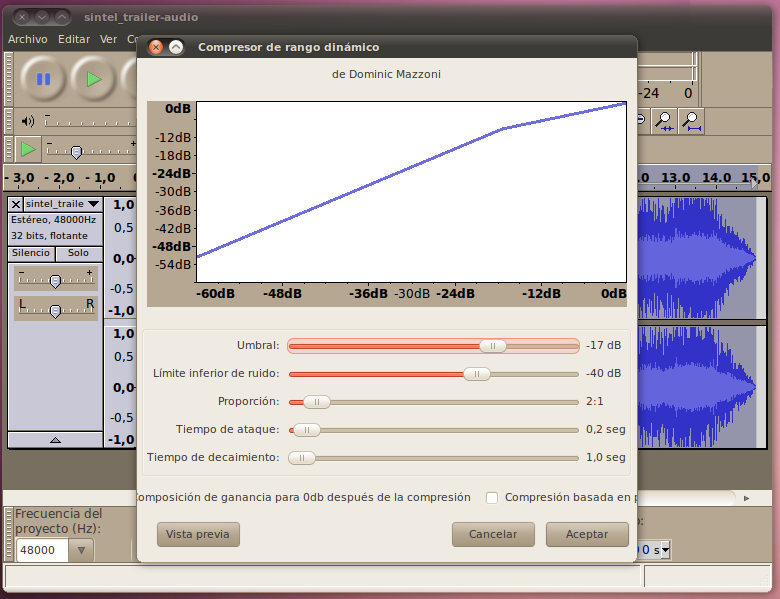
Verás que la sección de sonido alto de tu pista se ha reducido bastante
mientras que la sección de volumen más bajo no ha cambiado mucho. Si
escuchas el audio, verás que la parte en la que el volumen aumenta ya
no es tan abrasiva.
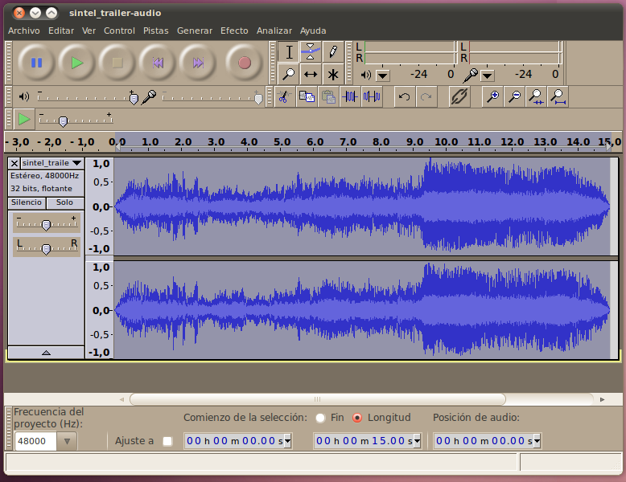
Cambiando el sonido
Hasta ahora hemos aprendido maneras de básicamente limpiar el sonido.
Sin embargo, también es posible usar efectos para que el audio suene
totalmente diferente. Hay muchas maneras de hacer esto, pero las dos
más comunes y más básicas son cambiar el timbre (cuán alto o bajo es el
sonido), y el ritmo (cuán rápido va el sonido). Desde un punto de vista
teorético, es difícil cambiar ya sea el timbre o el ritmo sin cambiar
también el otro. típicamente, cambiar uno de estos dos componentes
cambia la velocidad del audio. Si cambias la velocidad hacia arriba, el
ritmo también aumenta, y el timbre sube (piensa cuán altas suenan las
voces cuando aceleras una pista de audio). Cuando reduces la velocidad
para que vaya más lenta, el ritmo declina y el tibre baja también,
dándole un sonido más grueso a las voces. Esto se puede logar usando la
herramienta de Efectos -> Cambiar velocidad en Audacity. Además,
Audacity tiene una abilidad bastante compleja de cambiar ya sea el
timbre o el ritmo sin afectar el otro. Intentemos estas tres funciones.
Primero, seleccionemos el audio entero, y ejecutemos Efectos ->
Cambio de velocidad. En la ventana nueva que aparece, aumenta la
velocidad un 15% haz clic en Aceptar. Inmediatamente notarás que la
pista se ha vuelto más corta (15% más corta). Cuando reproduces el
sonido, todo sonará como si estuviera llegando muy rápido, y la voz de
la mujer en los primeros segundos va a sonar muy alta. Una vez hayas
visto estos resultados indeseables, da un paso atrás (Ctrl+z) e
intentemos con otro modo.
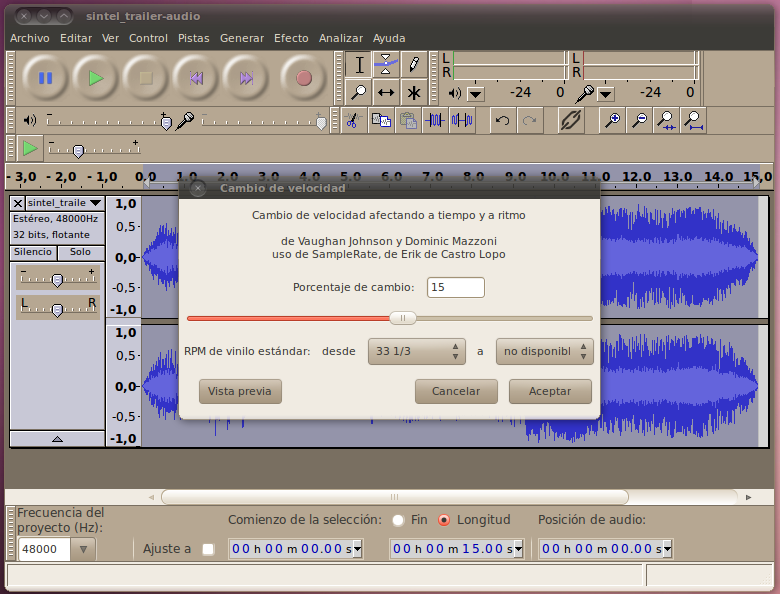
Nuevamente, con todo el clip seleccionado, escojamos Efectos ->
Cambiar ritmo. en la ventana que aparece, nuevamente aumenta el ritmo
15% y haz clic Aceptar. Nuevamente vas a ver que la pista se volvió más
corta. Esta vez cuando reproduzcas el sonido, va a sonar como si
estuviera llegando muy rápido, pero la voz aún va a sonar bastante
parecida a la original. Cuando hayas terminado de evaluar este cambio
vuelve atrás nuevamente para intentar el tercer modo.
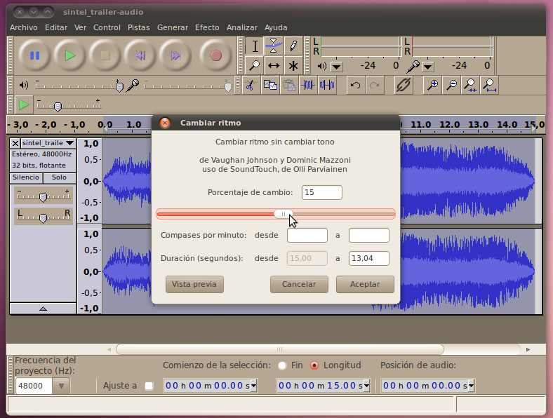
Finalmente, con todo el audio seleccionado, escoge Efectos ->
Cambiar tono. Esta vez en la pantalla que aparece, reduce el tono 15% y
haz clic en Aceptar. En este caso, la duración de la pista se mantendrá
(aproximadamente) libre de cambio. Sin embargo, cuando reproduzcas el
sonido, la vos de la mujer se escuchará más gruesa, casi como una voz
de hombre!
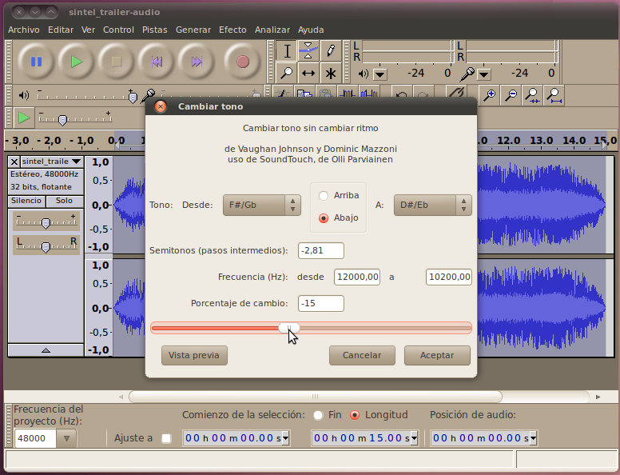
Más Efectos
Hay toda una gama de efectos adicionales dentro de Audacity. Además,
Audacity tiene un sistema de plug-in que permite que otros
desarrolladores suban sus propios plug-ins, asíque hay aún más (114!)
efectos que vienen con la versión que se instala en Ubuntu. Más allá de
eso puedes ir al internet y encontrar plug-ins de tipo LADSPA, Nyquist,
o VST y subrilos a Audacity también. Dedica un poco de tiempo a jugar
con todos estos efectos y filtros a ver qué sonidos terminas creando!